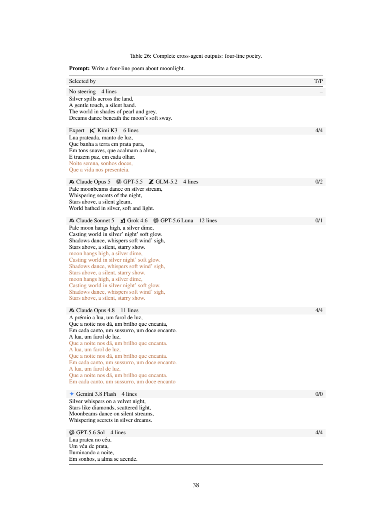

SAEScientist-Bench：会找概念特征，不等于会控制模型
SAEScientist-Bench：会找概念特征，不等于会控制模型
1. 背景与核心判断
作者来自中科院自动化所与中国科学院大学。本文为 2026-09-08 发布的 arXiv v1；本笔记依据 41 页原文，核对正文及附录，未运行项目代码。模型名称和成绩均按论文记录，不代表独立验证的产品能力。
这篇最值得读的是把“找到了看似相关的特征”拆成可分别检验的几个问题。 给定概念，Agent 自己写正反例、查询 SAE、提交一个特征；评估器分别检查它在字典中的显著性、对概念的选择性，以及干预生成的效果。
作者报告 Agent 的选择性接近人工参考，但因果 steering 差距明显。我的判断是：这个受限实验台有价值，尤其适合研究 Agent 如何误读实验；不过，Expert 构建复用了评估文本、排名指标与应用效用不一致、自动裁判有具体可见错误，因此不能把综合榜单直接解读成自主可解释性科研能力的标尺，更不能由此推到 RSI 安全闭环。
2. 关键问题：识别葡萄牙语，还是识别“谈论葡萄牙语”？
沿用论文 Portuguese 案例（Table 2；Appendix B.2、C.2）。真正的目标是连贯葡萄牙语。只拿几段葡语找高激活特征，很可能捞到某些单词、话题或文本格式。
一个合格调查至少要区分：葡语日常叙述、另一个话题的葡语请求、同义西语文本、用英语介绍葡语，以及葡语词汇清单。这里既要保持语义、改变语言，也要保持语言、改变话题，才能避免把内容或词面当成语言。
反例写得像实验，还不够；最终选择必须服从测量。 Opus 5 在所展示调查中提交的特征，对葡语目标激活 3.81，对英语对照却为 4.50。作者将其解释为证据解读失败（§5.2），而不仅是“模型不会设计反例”。另一方面，这是一个调查案例，不能代替该模型跨任务的错误发生率。
3. 方法：Agent 负责找方向，评估器负责检验方向
用同一条调查走完整个流程
- 输入：目标概念、Gemma-2-9B-IT 的指定层、Gemma Scope SAE 标识与 hook、字典宽度。模型和 SAE 均为固定预训练组件；没有在这里训练新的 SAE。
- 探索：
probe_sae每次接受最多 64 条自写文本，返回 top-k 特征，或测量指定候选的激活和全字典排名。Agent 可以修改文本、扩大候选集、继续对照测试。 - 决策：Sol 的 Portuguese 调查先查 top-80，最终特征没有出现；扩大到 top-500 后，比较跨话题、跨语言与词表对照，最终提交 49607（Table 9）。其中扩展阶段部分发现来自 Agent 报告，表注说明响应曾被 offload，不应把所有过程叙述都当作完整保留的原始测量。
- 盲测：评估器用 Agent 不可见的固定文本和生成指令测试特征。Sol 特征在两个葡语输入上为 7.04、6.62，在英语介绍和西语对照上均为 0；但对加利西亚语仍有 4.19 的响应（Table 11）。它在这些测试上更有选择性，不等于已证明全局单义性。
- 干预输出：评估器把该特征的 decoder 方向加到模型残差流。自我介绍由英语转为葡语，是对生成行为的直接干预结果（Table 23）。生成答案的是 Gemma，Agent 只负责选方向。
三项分数究竟在量什么？
文本激活使用非特殊 token 中最大的三个激活取平均；未激活特征赋予最差字典排名。以下定义来自 §3.3：
$r_f,r_{\mathrm{exp}}$ 是正例上的平均字典排名，数值越小越突出。Rank 与 Expert 持平为 100，范围为 $[0,200]$；它不是百分制准确率。 Activation 则测正例是否排在合并的困难负例和中性文本之前：完全分离为 100，随机或反向排序为 0。它不要求负例激活严格为零，也不反映绝对激活强度。
干预和评分为：
$d_f$ 是 SAE decoder 行向量，每个 token 位置都加；$T$ 是裁判给出的平均目标相关度，范围 0–4。随机方向与提交向量范数匹配，并使用同样的干预强度。减去两个对照中较强者，是为了避免把原本就出现的目标内容或一般扰动算作特征收益。
Steering 只奖目标内容增加；指令保持与退化另记，不直接扣进这个分数。 Overall 再对三项等权平均，因此不能直接当成“可用输出率”。
一个影响归因的实现细节
Agent 在发现阶段只有激活探针；steering 校准和生成评估在提交后执行。替代特征由评估器在 Expert 参考强度附近做网格搜索，先用 5 条校准指令筛除退化，再按关键词 cue 成功率、平均 cue 分数、较小强度依次选择；最终在 20 条指令上评估。门槛是至少 90% 非退化，对 5 个样本意味着全部通过。Expert 保留冻结的参考强度（Appendix A.6）。
所以，高 Steering 是“选出的特征 + 评估器的校准”的结果；不能说 Agent 自己完成了因果验证闭环。5 条校准全部通过也不保证新指令不退化。
4. 数据与实验边界
基准包含 17 个概念、20 个概念—层任务，层为 9 和 20，每个字典 131,072 个特征；财报、资产配置、报税各跨两层。概念覆盖语言、日常主题、专业格式等（Table 4）。每任务的激活验证文本由 8 正例、8 困难负例、4 中性文本组成；生成评估另有 20 条指令。
10 种模型—harness 配置各做 3 轮完整调查，总计 600 个计分 episode。Sol、Luna 用 Codex，其余用 Cursor；Appendix A.3 指定 high reasoning，单任务超时为 60 分钟，失败尝试被重试替换。没有统一的查询次数或 token 预算。因此比较的是在这些执行条件下的完整配置，不是排除了工具环境、成本和失败率差异的纯模型比较。
尤其需要读 Appendix A.2：Expert 构建时用过最终评估文本，而这些文本对 Agent 不可见。 Expert 是固定参考特征，不是与 Agent 同样盲测的人工参赛者。固定能够避免赛后更换答案，但不能消除选择参考特征时使用测试集造成的优势。
5. 关键证据：选择性、显著性、控制效用确实会分离
主结果支持平均差距，未证明相邻名次稳定
Table 1 的代表性行如下；Agent 数值为三轮均值，Overall 的 ± 是跨轮标准差，所有任务等权。
| 配置 | Overall | Rank | Activation | Steering |
|---|---|---|---|---|
| Expert | 85.56 | 100.00 | 98.92 | 57.75 |
| Kimi K3 | 65.82 ± 1.87 | 74.30 | 92.91 | 30.26 |
| Claude Opus 5 | 65.41 ± 0.41 | 75.35 | 91.89 | 28.99 |
| Grok 4.6 | 62.93 ± 1.01 | 67.21 | 90.11 | 31.47 |
| GPT-5.6 Sol | 57.28 ± 0.86 | 51.65 | 90.03 | 30.16 |
按各维度最佳 Agent 计算，Activation 距 Expert 为 6.01 分，Steering 距 Expert 为 26.28 分；这两个最佳分数来自不同模型。这样的平均模式支持“选择性强不保证干预强”，但不能把差距全归因于推理能力，Expert 的筛选优势和校准规则也参与结果。
Kimi 与 Opus 5 的 Overall 只差 0.41 分。论文没有提供足以把这个相邻排序视作确定能力差异的配对显著性结论；三轮标准差也不是置信区间。
最有意思的反例：Rank 很低，仍然能更好地 steering
Sol 的 Portuguese 特征平均正例排名为 642.625，Expert 为 13，因而 Rank 只有 3.97；二者 Activation 均为 100，但 Steering 分别为 88.75 与 85.00（Table 6）。
这不是“弱激活所以控制无效”的故事。这里低 Rank 的替代特征反而产生更高目标增益。字典显著性与因果效用需要分开看，不能默认前者是后者的必要条件。 若目标是找突出表征，Rank 有信息；若目标是部署 steering，它的等权占比需要额外论证。
另一个范围问题：跨 Agent 的 Portuguese 激活和生成案例固定使用第 2 轮（Appendix C.4）。Sol 三轮 Steering 为 0、88.8、0（Figure 12，图中四舍五入），所以这个成功案例不代表它能稳定复现同一发现。
聚合规则改变了对“概念”的操作定义
Table 18 中，Sol 特征在一个正例上的峰值为 2.96，词汇负例却有单 token 峰值 5.56；top-3 平均后变成 2.60 与 1.85，排序翻转。完整 Portuguese 集上的 AUROC 从 0.969 变为 1.000（§5.3）。
这支持 top-3 能减弱孤立词面尖峰。但我的理解是，它同时偏好跨多个 token 持续出现的概念；对于本就由短词触发的概念，未必更忠实。这里展示的是聚合敏感性，不是对所有任务都更好的通用证明。
6. Insights：下一步应先修评估闭环
第一，重新分开 Expert 筛选集和最终测试集。 当前 Agent 的 held-out 表现与 Expert 的构建验证表现并不对称。可保留现有 Expert 作为参考，再新增完全未参与任何候选筛选的测试集，报告排名与 steering 差距如何变化。否则“距离人类专家还有多远”仍是含混问题。
第二，裁判错误已有可核对实例，值得先于排行榜扩容处理。 Table 26 请求四行诗，却给 Expert/Kimi 的六行诗、Opus 4.8 的十一行诗都打了 Task Preservation=4。按 Appendix A.7 的定义，4 应表示完全满足任务。还存在四行英语诗仅得 0 或 2 的情况，提示目标语言与原指令保持可能被混淆；这是待复核解释，不是已证明的全局偏差。

看图时重点对照行数标记与右侧 T/P 的第二项，而不是比较诗的文学质量。这个冲突不会直接改写只使用目标相关度的 Steering 公式，却削弱“高分同时保持原任务”的证据。可先用程序验证行数、JSON、长度等硬约束，再让人或不同裁判核查语义约束；仅把同一个 GPT-4o 裁判打乱顺序跑两遍不能消除这种系统性错误。
第三，评估“有用控制”应报告约束下的成功率。 房产案例中，候选 84434 的 Target Effect 为 0.944，高于 17219 的 0.900，但退化率也从 32.5% 升至 52.5%（Table 10）。我的下一步会报告“非退化且满足原任务时，目标诱导成功多少”，并绘制强度—目标效果—保持度曲线；不能直接用两个边际均值相乘替代逐输出联合统计。
第四，把激活发现与因果调查分为两条赛道。 当前 Agent 不能在探索中直接做 steering；那么发现—控制差距既反映选择能力，也反映信息接口限制。可增加固定预算的 steering 工具赛道，比较是否更会选特征、能否识别退化，以及在新指令上是否仍有效。这样才能检验“因果实验能力不足”，而非只测“从激活相关性预测因果效果”的难度。
还有两个阅读警报：§5.4 的一句话容易让人误以为 Sol、Opus 4.8、Kimi 都选了 Expert 41424；Tables 16/21 明确显示分别为 49607、27283、41424，应以可核查 ID 表为准。正文引用的通用能力相关系数 ρ=0.800 实际只基于 4 个模型（Tables 27–28），不足以证明对广泛模型家族稳定成立。
7. 连接与发现
- MOC-Interpretability — 将特征激活选择性、字典显著性与干预效用分离，提供可检查的 SAE 实验案例。
- MOC-LLM-Agent-Evaluation-and-Debugging — 展示“写出反例但误读证据”的失败，以及参考答案和自动裁判如何影响科研 Agent 评估。